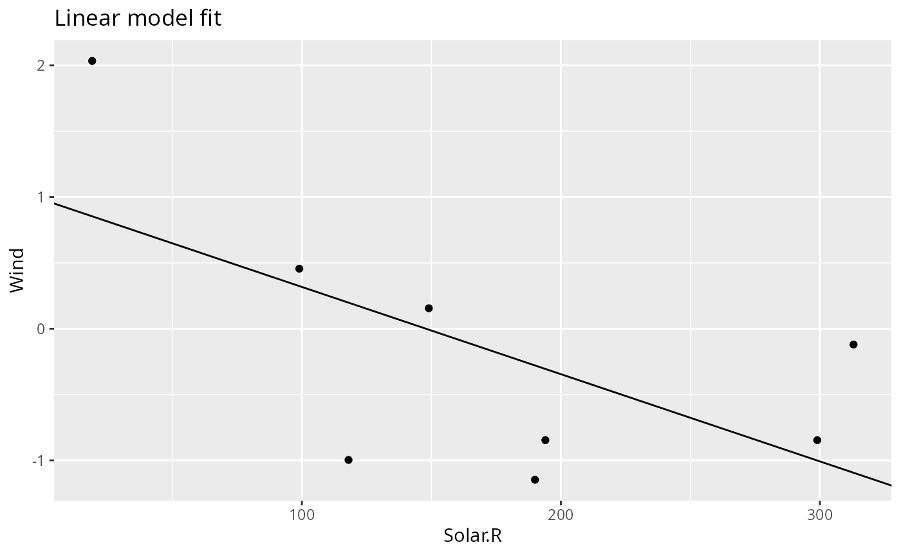

Existing pipeline
Let’s start where we left off in the Get started with pipeflow vignette, that is, we have the following pipeline
pip
# <pipeflow_pip> my-pip (4 steps)
# -------------------------------
# step depends out state
# 1: data <data.frame[10x6]> done
# 2: data_prep data <data.frame[10x7]> done
# 3: model_fit data_prep <lm[13]> done
# 4: model_plot model_fit,data_prep <ggplot2::ggplot> donewith the following set data
pip_get_params(pip)[["data"]] |> head(3)
# Ozone Solar.R Wind Temp Month Day
# 1 41 190 7.4 67 5 1
# 2 36 118 8.0 72 5 2
# 3 12 149 12.6 74 5 3Insert new step
Let’s say we want to insert a new step after the
data_prep step that standardizes the y-variable.
pip |> pip_add(
"standardize",
function(
data = ~data_prep,
yVar = "Ozone"
) {
data[, yVar] <- scale(data[, yVar])
data
},
after = "data_prep"
)
pip
# <pipeflow_pip> my-pip (5 steps)
# -------------------------------
# step depends out state
# 1: data <data.frame[10x6]> done
# 2: data_prep data <data.frame[10x7]> done
# 3: standardize data_prep [NULL] new
# 4: model_fit data_prep <lm[13]> done
# 5: model_plot model_fit,data_prep <ggplot2::ggplot> done
library(visNetwork)
do.call(visNetwork, args = pip_get_graph(pip)) |>
visHierarchicalLayout(direction = "LR", sortMethod = "directed")The standardize step is now part of the pipeline, but so
far it is not used by any other step.
Replace existing steps
Let’s revisit the function definition of the model_fit
step
pip[["model_fit", "fun"]]
# function (data = ~data_prep, xVar = "Solar.R")
# {
# lm(paste("Ozone ~", xVar), data = data)
# }To use the standardized data, we need to change the data dependency
such that it refers to the standardize step. Also instead
of a fixed y-variable in the model, let’s pass it as a parameter.
pip |> pip_replace(
"model_fit",
function(
data = ~standardize, # <- changed data reference
xVar = "Temp.Celsius",
yVar = "Ozone" # <- new y-variable
) {
lm(paste(yVar, "~", xVar), data = data)
}
)The model_plot step needs to be updated in a similar
way.
pip |> pip_replace(
"model_plot",
function(
model = ~model_fit,
data = ~standardize, # <- changed data reference
xVar = "Temp.Celsius",
yVar = "Ozone", # <- new y-variable
title = "Linear model fit"
) {
coeffs <- coefficients(model)
ggplot(data) +
geom_point(aes(.data[[xVar]], .data[[yVar]])) +
geom_abline(intercept = coeffs[1], slope = coeffs[2]) +
labs(title = title)
}
)The updated pipeline now looks as follows.
pip
# <pipeflow_pip> my-pip (5 steps)
# -------------------------------
# step depends out state
# 1: data <data.frame[10x6]> done
# 2: data_prep data <data.frame[10x7]> done
# 3: standardize data_prep [NULL] new
# 4: model_fit standardize [NULL] new
# 5: model_plot model_fit,standardize [NULL] newWe see that the model_fit and model_plot
steps now use (i.e., depend on) the standardized data. Let’s re-run the
pipeline and inspect the output.
pip_set_params(pip, params = list(xVar = "Solar.R", yVar = "Wind"))
pip_run(pip)
# info [2026-06-14 13:40:46.614 UTC]: Start run of pipeflow_pip 'my-pip'
# info [2026-06-14 13:40:46.614 UTC]: Step 1/5 data - skipping done step
# info [2026-06-14 13:40:46.614 UTC]: Step 2/5 data_prep - skipping done step
# info [2026-06-14 13:40:46.614 UTC]: Step 3/5 standardize
# info [2026-06-14 13:40:46.616 UTC]: Step 4/5 model_fit
# info [2026-06-14 13:40:46.619 UTC]: Step 5/5 model_plot
# info [2026-06-14 13:40:46.628 UTC]: Finished run of pipeflow_pip 'my-pip'
pip[["model_fit", "out"]] |> coefficients()
# (Intercept) Solar.R
# 0.979672739 -0.006625601
pip[["model_plot", "out"]]
Removing steps
Let’s see the pipeline again.
pip
# <pipeflow_pip> my-pip (5 steps)
# -------------------------------
# step depends out state
# 1: data <data.frame[10x6]> done
# 2: data_prep data <data.frame[10x7]> done
# 3: standardize data_prep <data.frame[10x7]> done
# 4: model_fit standardize <lm[13]> done
# 5: model_plot model_fit,standardize <ggplot2::ggplot> doneWhen you are trying to remove a step, {pipeflow} by default checks if the step is used by any other step, and raises an error if removing the step would violate the integrity of the pipeline.
try(pip_remove(pip, "standardize"))
# Error in pip_remove(pip, "standardize") :
# cannot remove step 'standardize' because the following steps depend on it: 'model_fit', 'model_plot'To enforce removing a step together with all its downstream
dependencies, you can use the recursive argument.
pip_remove(pip, "standardize", recursive = TRUE)
# Removing step 'standardize' and its downstream dependencies: 'model_fit', 'model_plot'
pip
# <pipeflow_pip> my-pip (2 steps)
# -------------------------------
# step depends out state
# 1: data <data.frame[10x6]> done
# 2: data_prep data <data.frame[10x7]> doneNaturally, the last step never has any downstream dependencies, so it can be removed without any issues.
last_step <- tail(pip[["step"]], 1)
pip_remove(pip, last_step)
pip
# <pipeflow_pip> my-pip (1 step)
# ------------------------------
# step depends out state
# 1: data <data.frame[10x6]> doneReplacing steps in a pipeline as shown in this vignette will allow to re-use existing pipelines and adapt them programmatically to new requirements. Another way of re-using pipelines is to combine them, which is shown in the Combining pipelines vignette.